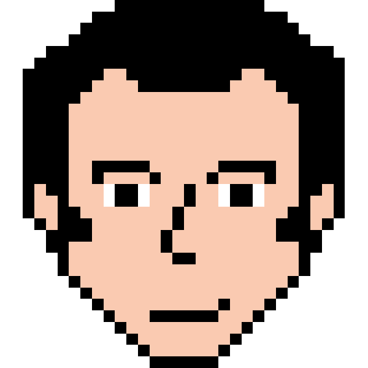
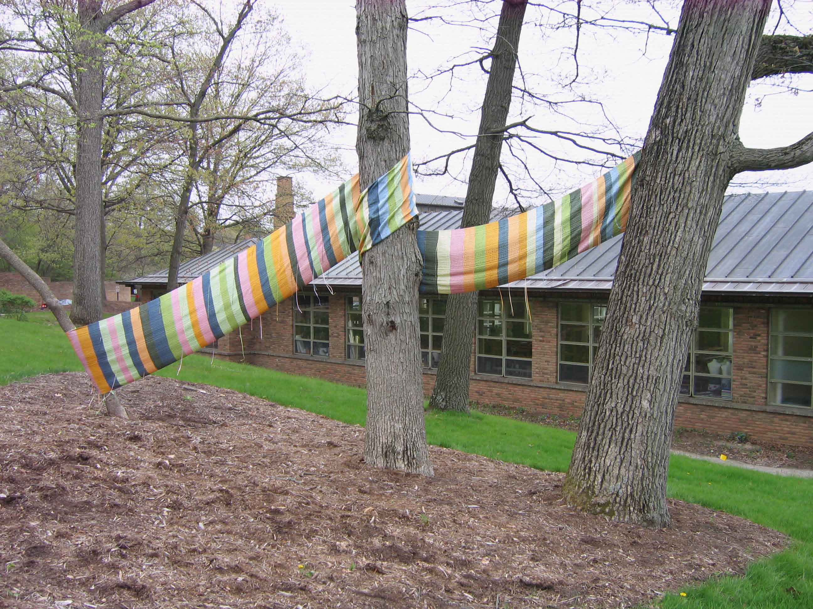
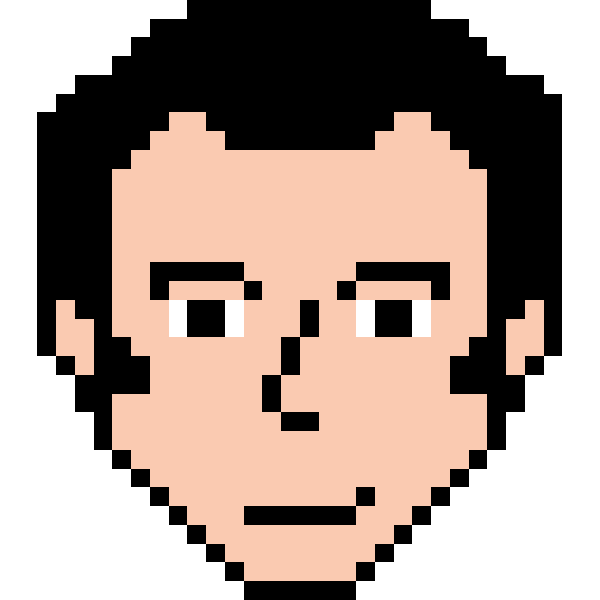
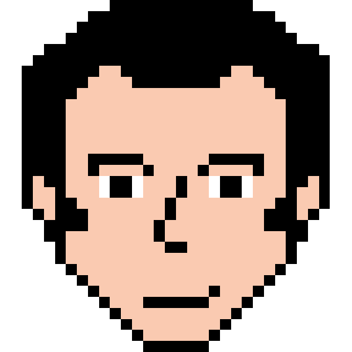

I am a huge fan of old video game graphics. I worked on creating portraits of people, characters, and things into 32 by 32 pixel graphics. If you would like to be pixelized please send me an email for more information.
Process
I start out with a picture of a person or object. I then reduce the image size to 32 by 32 pixels. I then create the border and fill the image with basic colors. The tricky part is focusing on one detail that will make the person recognizable.

Lord of The Rings 16 by 16 pixels
This was a project from a Type + Image class I took at RISD. The goal was to create three 16 by 16 graphics from a fantasy novel.
Honors Weaving Final Project
I wove a 27 foot installation piece for my final weaving project in high school. The piece was inspired by Christo and Jeanne Claude's Vally Curtain.

Podcast: Tales from the SaaS Graveyard
I co-host a podcast called Tales From the SaaS Graveyard with my friend Jake. Here is a link to our LinkTree where you can easily access our episodes on your preferred podcast app. We also raised money on Kickstarter. We also wrote a blog post about our findings here.
Improv Comedy
I started practicing improv in June 2018 at Engames Improv and have since completed their 5-level core curriculum. I also completed Documentary Improv training with Thunderbolt Comedy. I was on the indie team Hot Lunch for a hot minute and now I perform with BootLocker. Here is a Documentary Live! show I was in recently:
Film
Babson Entrepreneurial Leadership Academy
This project was to make an informative video about BELA. My team and I edited this together one weekend.
Music and Entrepreneurship
This was a project by Professor Erik Noyes and Toni Lester at the ReThink Music Conference. They interviewed people in the music industry to see how they define entrepreneurship. Amy Malinowski and I were brought on to help film and find people to interview.
Analyzing the FME Experience
Our team interviewed Babson alumni to understand their experience in the Foundations of Management and Entrepreneurship (FME) course at Babson. We created a 20 minute documentary which identified the trends among the experiences. This video was given to faculty to help redesign FME curriculum. This film is for internal use only.


 
